CSS权威指南（3rd）笔记-查缺补漏4 - 浮动
对于浮动元素有几点要记住。首先，会以某种方式将浮动元素从文档的正常流中删除，不过它还是会影响布局。采用css的特有方式，浮动元素几乎“自成一派”，不过它们还是对文档的其余部分有影响。
这种影响源自于这样一个事实：一个元素浮动时，其他内容会“环绕”该元素。对于浮动图像来说，这种行为我们已经很熟悉了，不过要知道，元素浮动时也同样如此（例如，浮动一个段落在下图中，由于为浮动段落增加了外边距，可以很清楚地看到这种行为：p.aside {float: right; width: 15em; margin: 0 1em 1em; padding: 0.25em; border: 1px solid;}
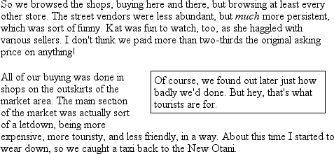
首先，浮动元素周围的外边距不会合并。如果浮动一个有20像素外边距的图像，在这个图像周围将至少有20像素的空间。如果其他元素与此图像相邻（这表示水平相邻和垂直相邻），而且这些元素也有外边距，那么这些外边距不会与浮动图像的外边距合并，如下图所示：p img {float: left; margin: 25px;}
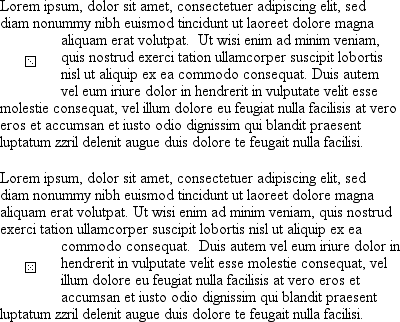
如果确实要浮动一个非替换元素，则必须为该元素声明一个width。否则，根据CSS规范，元素的宽度趋于0。因此，假设浏览器的最小width值是1个字符，那么浮动段落可能只有1个字符宽。如果没有为浮动元素声明width值，最后可能得到如下图所示的结果（坦率地说，这种情况很少见，但确实是可能的）。
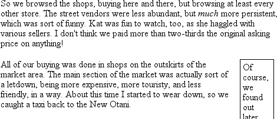
不浮动
除了left和right外，float属性还有一个值，float: none用于防止元素浮动，
这看上去可能有些傻，因为要让一个元素不浮动，最容易的办法就是不声明float，这样不就行了吗？确实如此。首先，float的默认值是none。换句话说，要得到正常的非浮动行为，必须有这个值，如果没有这个none值，所有元素都会以某种方式浮动。
其次，你可能想覆盖导入样式表中的某个样式。假设你在使用一个服务器端样式表，这个样式表要让图像浮动。不过在某个特定的页面上，你不希望图像浮动。不必为此再编写一个全新的样式表，而只需在文档的嵌套样式表中增加img {float: none;}，不过，除了这种情况，确实很少有必要真正使用float: none。
浮动的详细内幕
深入讨论浮动的详细内容之前，首先要建立包含块的概念，这很重要。浮动元素的包含块是其最近的块级祖先元素。因此，在以下标记中，浮动元素的包含块就是包含该浮动元素的段落元素：1
2
3
4
5
6<h1>Test</h1>
<p>
This is paragraph text, but you knew that. Within the content of this paragraph is an image that's been floated.
<img src="testy.gif" style="float: right;">
The containing block for the floated image is the paragraph.
</p>
此外，浮动元素会生成一个块级框，而不论这个元素本身是什么。因此，如果设置一个链接浮动，即使该链接元素本身是行内元素，通常会生成一个行内框，但只要它是浮动的，就会生成一个块级框。它会像块级元素一样摆放和表现（例如，就好像是一个div元素）。对浮动元素声明display: block也不是不可能，不过没有必要这么做。
有一系列特定规则控制着浮动元素的摆放，所以在介绍浮动元素的行为之前，先来讨论这些规则。这些规则与控制外边距和宽度计算的规则很相似，开始看起来都一样。规则如下：
- 浮动元素的左（或右）外边界不能超出其包含块的左（或右）内边界。
这一点很显然。左浮动元素的左外边界向左最远只能到其包含块的左内边界，类似地，右浮动元素向右最远只能到达其包含块的右内边界。
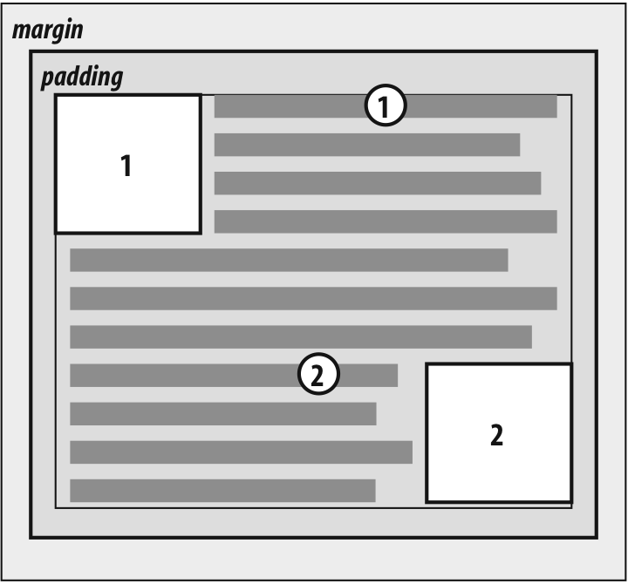 - 浮动元素的左（或右）外边界必须是源文档中之前出现的左浮动（或右浮动）元素的右（左）外边界，除非后出现浮动元素的顶端在先出现浮动元素的底端下面。这条规则可以防止浮动元素彼此“覆盖”。如果一个元素向左浮动，而另一个元素已经在那个位置，后放置的元素将挨着前一个浮动元素的右外边界放置。不过，如果一个浮动元素的顶端在所有之前浮动图像（元素）的底端下面，它可以一直浮动到父元素的左内边界。
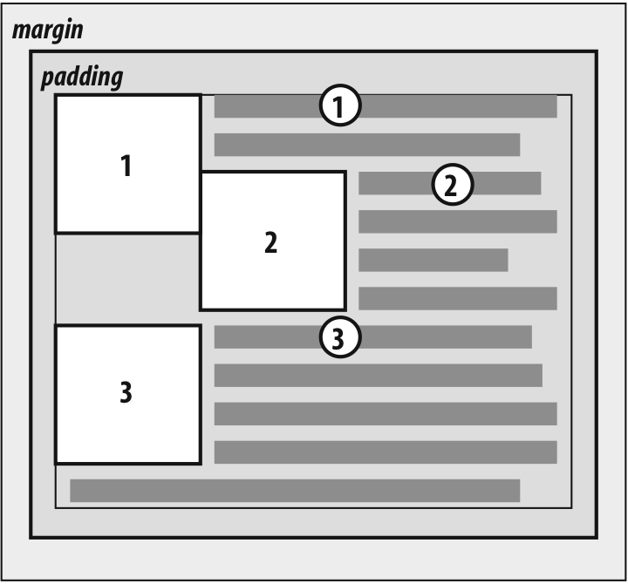
这个规则的好处是，所有浮动内容都是可见的，因为你不必担心一个浮动元素与另一个浮动元素重叠。这使得浮动很安全。使用定位时情况则完全不同，定位很容易导致元素相互覆盖。 - 左浮动元素的右外边界不会在其右边右浮动元素的左外边界的右边。一个右浮动元素的左外边界不会在其左边任何左浮动元素的右外边界的左边。
这条规则可以防止浮动元素相互重叠。假设有一个body，宽为500像素，它只有两个300像素宽的图像。第一个图像浮动到左边，第二个浮动到右边。这个规则可以防止第二个图像与第一个图像重叠100像素。实际上，它会要求第二个图像向下浮动，直到其顶端在左浮动图像的底端之下，如下图所示。
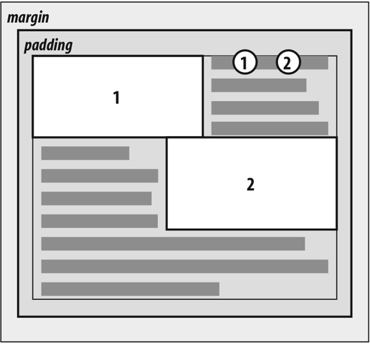 - 一个浮动元素的顶端不能比其父元素的内顶端更高。
如果一个浮动元素在两个合并外边距之间，放置这个浮动元素时就好像在两个元素之间有一个块级父元素。这个规则的前半部分很简单，可以防止浮动元素一直浮动到文档的顶端。正确的行为见下图所示。这个规则的第二部分则是对某些情况下的对齐进行微调一例如，如果有三个段落，其中中间的段落浮动。在这种情况下，浮动段落就会像有一个块级父元素一样浮动。这能防止浮动段落一直向上移动到三个段落共同的父元素的顶端。
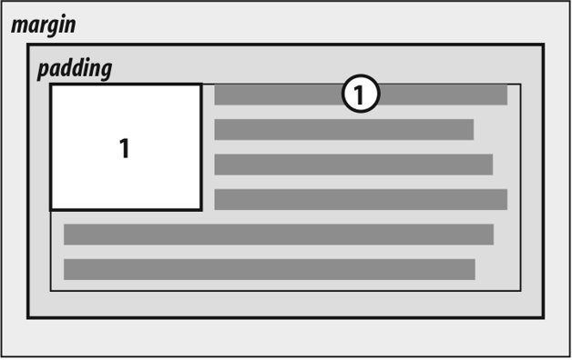 - 浮动元素的顶端不能比之前所有浮动元素或块级元素的顶端更高。
类似于规则4，规则5要求浮动元素不能一直浮动到其父元素的顶端。另外，浮动元素的顶端也不可能比之前出现的浮动元素的顶端更高。下图所示就是这样一个例子，在这里可以看到，由于第二个浮动元素必须在第一个浮动元素的下面，第三个浮动元素的顶端则是第二个浮动元素的顶端，而不是第一个浮动元素的顶端。
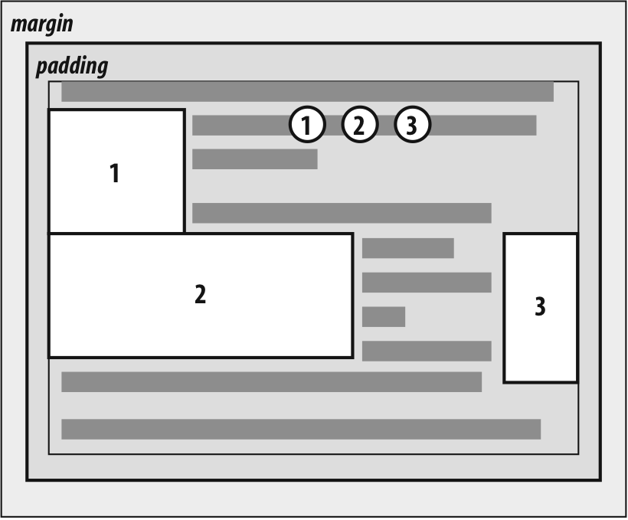 - 如果源文档中一个浮动元素之前出现另一个元素，浮动元素的顶端不能比包含该元素所生成框的任何行框的顶端更高。
类似于规则4和规则5，这个规则进一步限制了元素的向上浮动，不允许元素浮动到包含该浮动元素之前内容的行的顶端之上。假设一个段落的正中间有一个浮动图像。这个图像顶端最高只能放在该图像所在行框的顶端。从下图中可以看到，这样图像就不会向上浮动太远。
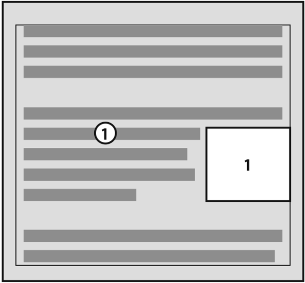 - 左（或右）浮动元素的左边（右边）有另一个浮动元素，前者的右外边界不能在其包含块的右（左）边界的右边（左边）
也就是说，浮动元素不能超出其包含元素的边界，除非它太宽，本身都无法放下，这就能防止出现以下情况，即多个浮动元素出现在一个水平行上，远远超出其包含块的边界，相反，如果浮动元素出现在另一个浮动元素的旁边，而因此可能导致超出包含块的话，实际上这个浮动元素会向下浮动到之前浮动元素下面的某一点，如下图所示（图中浮动元素从下一行开始，由此更清楚地说明这个规则在起作用）。
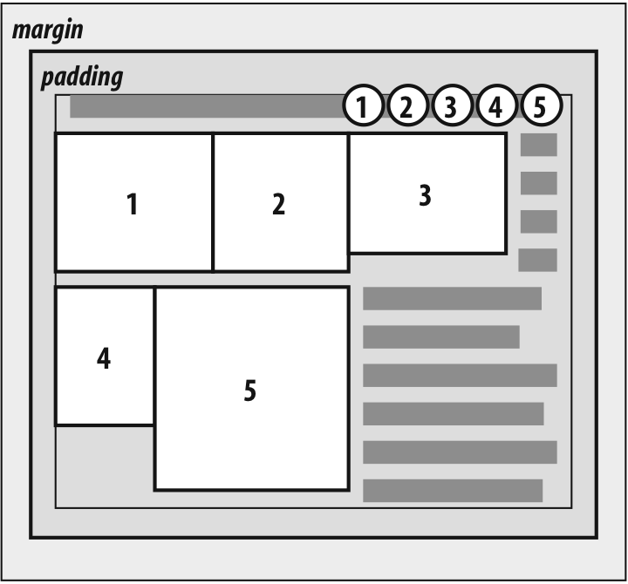 - 浮动元素必须尽可能高地放置。
当然，规则8要受前7条规则的限制。历史上，浏览器会把浮动元素的顶端与该图像标记所在行之后的行框的顶端对齐。不过，从规则8可以看出，浮动元素的顶端应当与其标记所在行框的顶端对齐，在此假设有足够的空间。这种理论上正确的行为如下图所示。
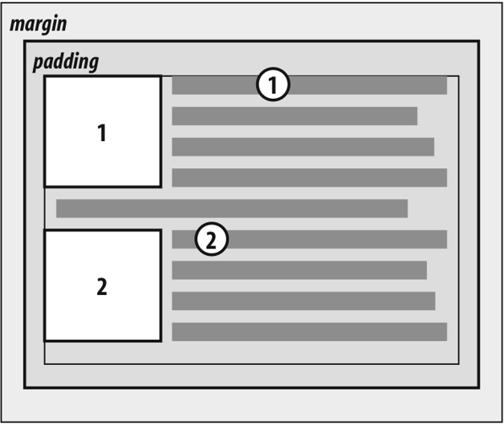 - 左浮动元素必须向左尽可能远，右浮动元素则必须向右尽可能远。位置越高，就会向右或向左浮动得越远。
同样的，这条规则要受前几条规则的限制。这里同样存在规则8中的警告，不过不那么模糊。从下图可以看到，很容易确定元素已经向右或向左走得尽可能远。
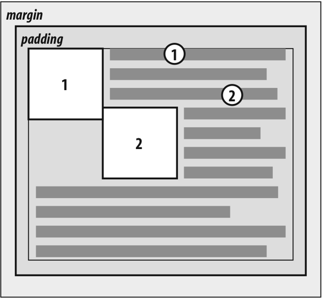
实用行为
前面介绍的规则有一些有意思的后果，这些结果源干两方面，一方面是规则中指出了一些要求，另一方面是规则中有些方面没有谈到。首先要讨论浮动元素比其父元素高时会有什么结果。
实际上，这种情况经常发生，以一个小文档为例，这个文档只包含几个段落和h3元素，其中第一个段落包含一个浮动图像。另外，这个浮动图像有5像素的外边距（5px）。你可能认为这个文档应该昆示如下，如下图所示。
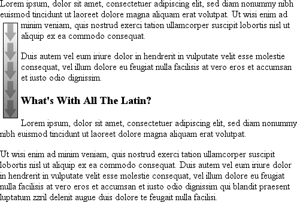
当然，这里并没有什么反常的地方，不过图10-15显示了为第一个段落设置一个背景时会发生什么。
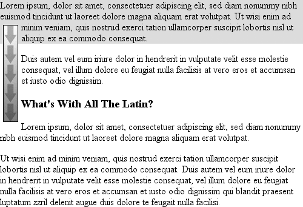
这与第二个例子基本上没有什么不同，只不过背景可见。可以看到，浮动图像超出了其父元素的底端。当然，在第一个例子中也是如此，只不过第一个例子中不明显，因为无法看到背景。前面讨论的浮动规则只处理了浮动元素和其父元素的左。右和上边界，而没有涉及下边界，这个遗漏是故意的，这就会得到如上图中所示的行为。
警告：实际上，有些浏览器不能正确地做到这一点。相反，它们会增加父元素的高度，使浮动元素能够包含在父元素中，即使这会导致父元素中出现大量多余的空白。
CSS2.1澄清了浮动元素行为的一个方面：浮动元素会延伸，从而包含其所有后代浮动元素（而CSS的先前版本没有明确指出会发生什么情况）。所以，通过将父元素置为浮动元素，就可以把浮动元素包含在其父元素内，如下例所示：1
2
3
4<div style="float: left; width: 100%;">
<img src="hay.gif" style="float: left;">
The 'div' will stretch around the floated image because the 'div' has been floated.
</div>
与此相关，考虑背景及其与文档中之前出现的浮动元素的关系，见下图所示。
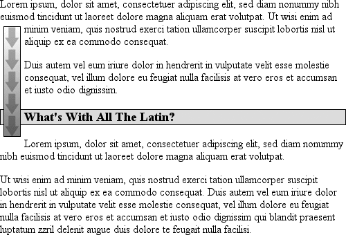
由于浮动元素同时处于流内和流外，所以这种情况肯定会发生。然后会怎样呢？标题的内容由浮动元素“显示”，不过，标题的元素宽度还是与父元素宽度相等。因此，其内容区将跨父元素的宽度，相应地，背景宽度也与父元素宽度相等。为了避免盖在浮动元素下面，具体内容并不从其内容区左边界开始显示。
负外边距
有意思的是，负外边距可能导致浮动元素移到其父元素的外面。这看上去与先前的规则相矛盾，不过其实并不矛盾。通过设置负外边距，元素可能看上去比其父元素更宽，同样的道理，浮动元素也可能超出其父元素。
下面考虑一个向左浮动的浮动图像，其左外边距和上外边距都是-15px。这个图像放在一个div中，该div没有内边距、边框和外边距。结果如下图所示。
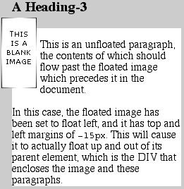
尽管看上去有问题，但实际上并没有违反浮动元素放在其父元素之外的相关限制。
仔细研究上一节的规则可以发现，从技术上讲这种行为是允许的：一个浮动元素的外边界必须在父元素内。不过，由于外边距为负，放置浮动元素的内容时就好像覆盖了自己的外边界一样，如下图所示，
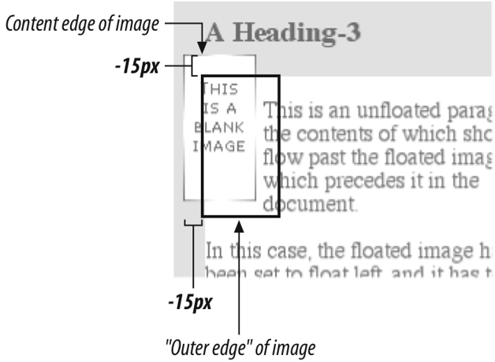
通过数学计算描述如下：假设div的上内边界在100像素处。为了得出浮动元素的上内边界应该在哪里，浏览器会做以下计算：100px +(-15pX）外边距+0内边距=85px，因此，浮动元素的上内边界应当在85像素处，尽管比浮动元素父元素的上内边界还要高，但从数学计算可知，这并没有违反规范。出于类似的原因，同样可以解释为什么浮动元素的左内边界可以放在其父元素左内边界的左边。
这里有一个重要问题：在使用负外边距时，如果浮动元素元素超出其父元素，文档会如何显示？例如，一个图像可能浮动得太远，超出了用户代理已显示的一个段落。在这种情况下，要由用户代理决定文档是否重新显示，CSS1和CSS2规范明确地指出，用户代理不必重新显示已显示内容来适应文档中后来出现的内容。换句话说，如果一个图像浮动到之前已经显示的段落中，它可能只是覆盖该位置上原有的内容。另一方面，用户代理也可能采用一种不同的方法处理这种情况，让内容环绕浮动元素重新显示。不论采用哪种方式，都不要指望肯定会发生某一种行为，否则为浮动元素设置负外边距的作用会受到限制。让元素浮动可能很安全，不过试图将元素在页面上向上推往往不是好主意。
还有另外一种方法可以让浮动元素超出其父元素的左右内边界：即浮动元素比其父元素更宽。在这种情况下，浮动元素会超出右或左内边界，从而尽可能正确地显示，究竞是超出右内边界还是左内边界，取决于元素以何种方式浮动。这会得到如下图所示的结果。
浮动元素、内容和重叠
还有一个更有意思的问题：如果一个浮动元素与正常流中的内容发生重叠会怎么样呢？
例如，如果一个浮动元素在内容流过的边上有负外边距（例如，右浮动元素上的左外边距为负），就会发生这种情况。你已经看到了对块级元素的边框和背景有什么影响。那么行内元素呢？
CSS1和CSS2对于这种情况下会有何种行为并不完全明确。CSS2.1则澄清了这个问题，指出以下明确的规则：
- 行内框与一个浮动元素重叠时，其边框。背景和内容都在该浮动元素“之上”显示。
- 块框与一个浮动元素重叠时，其边框和背景在该浮动元素“之下”显示，而内容在浮动元素“之上”显示。
为了说明这些规则，考虑以下情况：1
2
3
4
5
6
7
8
9
10
11
12
13img.sideline {float: left; margin: 10px -15px 10px 10px;}
p.box {border: 1px solid gray; padding: 0.5em;}
p.box strong {border: 3px double black; background: silver; padding: 2px;}
h2#jump-up {margin-top:-15px; background: silver;}
<img src="testy.gif" class="sideline">
<p class="box">
This paragraph, unremarkable in most ways, does contain an inline element. This inline contains some <strong>Btrongly emphasized text, which is so marked to make an inportant point</strong>. The rest of the element's contentis normal anonymous inline content.
</p>
<P>
This is a second paragraph. There's nothing remarkable about it, really. Please move along.
</p>
<h2 id="jump-up">A Heading!</h2>
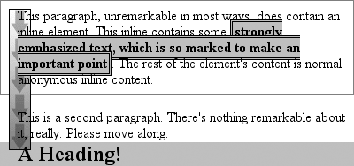
行内元素完全覆盖了浮动图像（包括背景、边框、内容和一切）。另一方面，块元素只是将其内容显示在浮动元素之上，但其背景和边框都放在浮动元素之下。
清除
我们已经讨论了一些浮动行为，介绍定位前还有一个内容没有谈到。你可能并不总是希望内容流过浮动元素，某些情况下，可能要特意避免这种行为。如果你的文档分组为小节，可能不希望一个小节的浮动元素浮动到另一个小节中。在这种情况下。你希望将每小节的第一个元素设置为禁止浮动元素出现在它旁边。如果第一个元素可能放在一个浮动元素旁边，则会向下推，直到出现在浮动元素的下面，而且所有后续内容都在其后面出现，如下图所示。
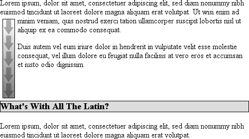
这可以利用clear属性完成。
- 值：left | right | both | none | inherit
- 初始值：none
- 应用于：块级元素
- 继承性：无
例如，为了确保所有h3元素不会放在左浮动元素的右边，可以声明h3{clear: left;}。这可以解释为“确保一个h3的左边没有浮动图像”，其效果非常类似干HTML中的<br clear="left">（有讽刺意味的是，大多数浏览器的默认行为都是为br元素生成行内框，所以clear不能应用于br，除非改变其display值！）。以下规则使用clear 来防止h3元素左边有浮动元素：h3 {clear: left;}
这会把h3推过所有左浮动元素，不过还允许浮动元素出现在h3元素的右边，如下图所示。
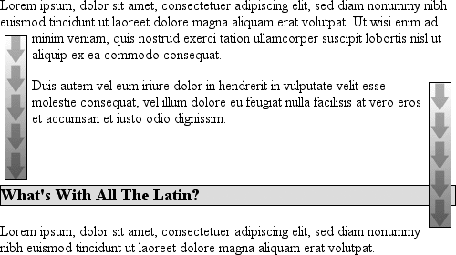
为了避免这种情况，确保h3元素不会与任何浮动元素在同一行上，要使用值both:h3 {clear: both;}
这很好理解，这个值会防止指定了clear的元素两边存在浮动元素，如下图所示。
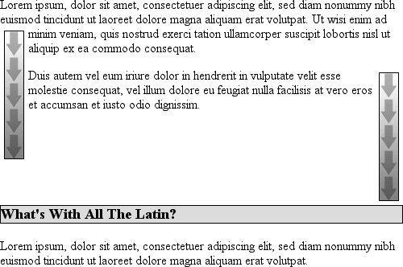
另一方面，如果只是不希望h3元素的右边有浮动元素，要使用h3{clear: right;}。
最后还有一个clear: none，它允许元素浮动到另一个元素的任意两边。float: none 值之所以存在，主要是为了支持正常的文档行为，即元素允许其两边有浮动元素。当然，可以用none来覆盖其他样式，如下图所示。尽管有规则指出h3元素不允许两边有浮动元素，不过，有一个h3特别设置为允许两边有浮动元素：1
2
3h3 {clear: both;}
<h3 style="clear: none;">What's With All The Latin?</h3>
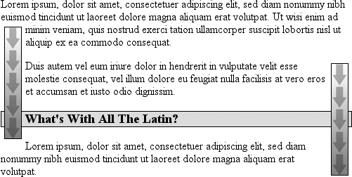
在CSS1和CSS2中，clear工作如下，它会增加元素的上外边距，使之最后落在浮动元素的下面，这实际上会忽略为清除元素（设置了clear的元素）顶端设置的外边距宽度。也就是说，清除元素的上外边距可能会调整，例如，并不是1.5em，而可能增加到10em或25px，甚至7.133in，或者是将元素下移足够远（使内容区在浮动元素下边界的下面）所需的任何长度。
在CSS2.1中，引入了一个清除区域。清除区域是在元素上外边距之上增加的额外间隔，不允许任何浮动元素进入这个范围内。这意味着元素设置clear属性时，它的外边距并不改变。之所以会向下移是这个清除区域造成的。要特别注意下图中标题边框的放置，这是由以下标记得到的结果：1
2
3
4
5
6img.sider {float: left; margin: 0;}
h3 {border: 1px solid gray; clear: left; margin-top: 15px;}
<img src="boxer.gif" class="sider" >
<img src="stripe.gif" >
<h3>Why Doubt Salmon?</h3>
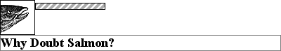
h3上边框与浮动图像下边框之间没有间隔，因为在h3的上外边距（15像素）之上增加了25像素的清除区域，将h3的上边框边界推到刚好越过浮动元素的下边界。一般都会这样，除非h3的上外边距计算为40像素或更多，在这种情况下，h3会很自然地放在浮动元素下面，clear值是什么则无关紧要。
当然，大多数情况下无法知道一个元素周围多大范围内不允许有浮动元素。要确保一个清除元素（设置clear属性的元素）的顶端与一个浮动元素的底端之间有一定空间，可以为浮动元素本身设置一个下外边距。所以，如果希望上例中的浮动元素下面至少有15 像素的空间，可以修改如下：1
2img.sider {float: left; margin: 0 0 15px;}
h3 {border: 1px solid gray; clear: left;}
浮动元素的下外边距会增加浮动框的大小，且由于清除元素必须推到浮动框下面的某个点以下，浮动框大小的增加会使这个点下移。前面已经看到过，这是因为浮动元素的外边距边界定义了浮动框的边界。